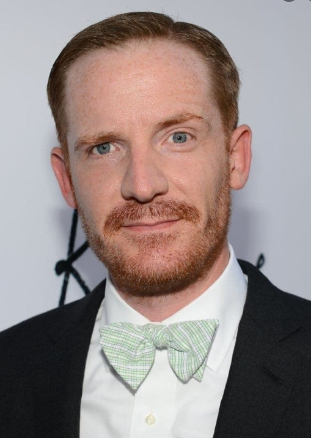

Marc Evan Jackson (nascido em 21 de agosto de 1970) é um comediante e ator americano mais conhecido por sua distinta entrega inexpressiva e papéis como personagens rígidos e autoritários. Alguns de seus papéis incluem Sparks Nevada na Thrilling Adventure Hour , Kevin Cozner em Brooklyn Nine-Nine (ele também hospeda um podcast baseado na sitcom, intitulado Brooklyn Nine-Nine: The Podcast ), Trevor Nelsson em Parks and Recreation , Dr. Murphy em 22 Jump Street , Shawn em The Good Place (também apresentando The Good Place: The Podcast ), e Bradford Buzzard na série Disney XD DuckTales .
Jackson começou sua carreira de improvisador com River City Improv, um grupo associado à Calvin University, depois de participar de um ensaio para tocar piano. Jackson mais tarde se juntou ao The Second City Detroit , tornando-se um membro da empresa principal em 1998. Enquanto estava no Second City Detroit, ele participou do show de 1999 "Phantom Menace to Society".
Jackson mudou-se para Los Angeles em 2001. Ele ensinou improvisação na Second City Hollywood. Ele se juntou ao grupo de improvisação de longa duração chamado "The 313" em 2003. O 313 é nomeado para o código de área de Detroit e é composto principalmente por ex-residentes de Detroit, incluindo Keegan-Michael Key , Larry Joe Campbell , Joshua Funk, Nyima Funk, Andy Cobb, Maribeth Monroe e Jaime Moyer. The 313 continua a se apresentar em festivais de comédia em todo o país, incluindo Las Vegas , San Francisco , e Detroit .
Após conhecer Mark Gagliardi e Ben Acker no Second City Hollywood, Jackson foi convidado para um dos primeiros ensaios do que viria a ser a Thrilling Adventure Hour e se tornou membro dos WorkJuice Players , interpretando Sparks Nevada no segmento regular " Sparks Nevada, Marshal em Marte ". O show acontece como um show ao vivo desde 2005 e foi publicado como um podcast desde janeiro de 2011. Jackson também apareceu no filme Drones , que foi escrito por Acker e Blacker e dirigido por Amber Benson e Adam Busch .
Jackson é metade de um ato duplo com a comediante Carrie Clifford no qual eles interpretam Sky & Nancy Collins, personagens que vivem em Orange County e estão tentando fazer stand-up pela primeira vez porque seus amigos os acham engraçados. Eles apareceram em Last Comic Standing , em Last Call com Carson Daly , e no Hollywood Improv .
Jackson estrelou uma websérie em 2011 dirigida por Jordan Vogt-Roberts chamada Fox Compton . Ele trabalhou com Vogt-Roberts muitas vezes, inclusive no filme The Kings of Summer em 2013, Kong: Skull Island em 2017 e na série de televisão Mash Up na Comedy Central . Jackson fez aparições em várias outras séries de televisão, incluindo Key & Peele , Psych , Arrested Development , Happy Endings , The Middle , 2 Broke Girls , Modern Family ,Kroll Show , Hello Ladies e Black-ish . Em 2012, Jackson estrelou Suit Up , uma websérie co-produzida pela DirecTV e Fox Digital Studio , como Jim Dunnigan. Suit Up foi a primeira série da Fox Digital Studio a ser escolhida para uma segunda temporada.
Jackson continuou sua afiliação com Schur assumindo um papel recorrente em sua comédia The Good Place como Shawn, que é identificado pela primeira vez como o juiz de conflitos entre o Good Place e o Bad Place, mas mais tarde é revelado como um supervisor do Bad Place. Lugar. Jackson apresentou The Good Place: The Podcast e Brooklyn Nine-Nine: The Podcast para a NBC.